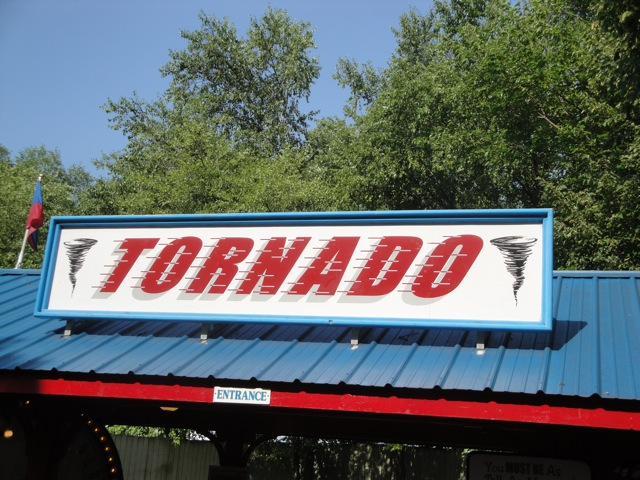
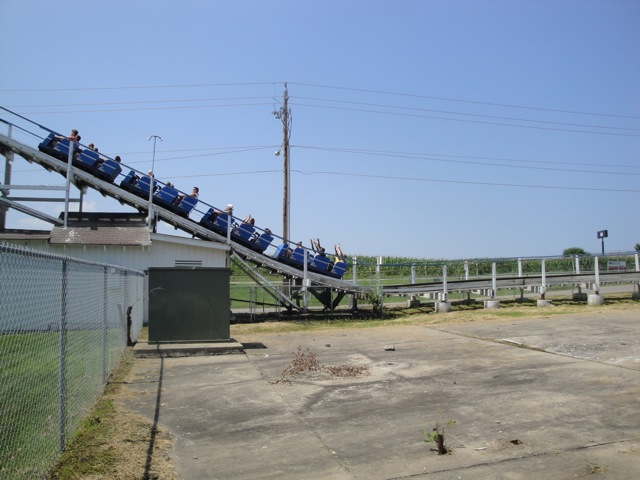
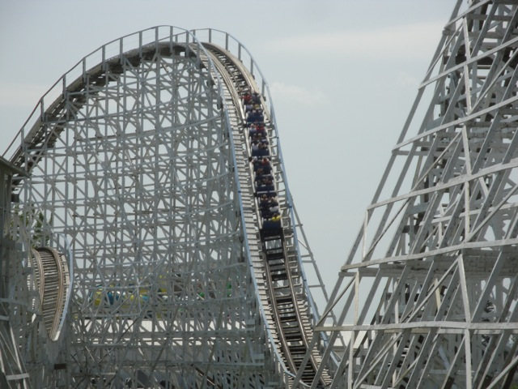
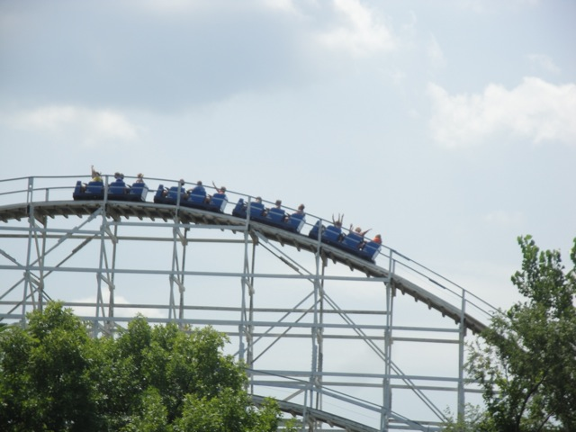
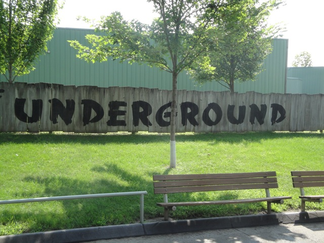
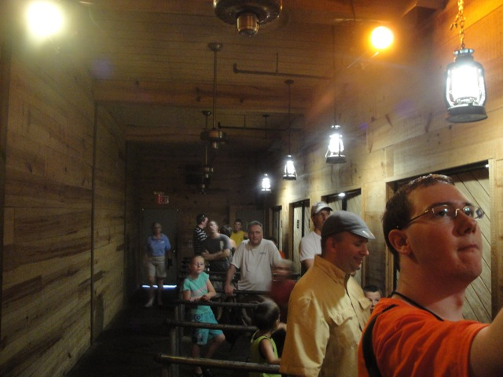
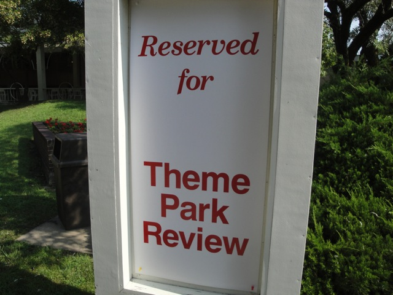
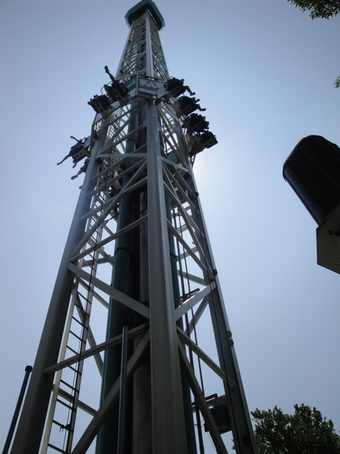

TPR's Middle America Tour
Nickelodeon Universe
Adventureland
Worlds of Fun Silver Dollar City City Museum Six Flags St. Louis Holiday World Indiana Beach Six Flags Great America Mt. Olympus Timber Falls Valleyfair
You know you're in the midwest when you wake up to this.
 Yup. We have definetly arrived at Adventureland.
Yup. We have definetly arrived at Adventureland.
Hey Look!!! They have a Dr. Von Dark clone here!!
 So far, this seems like a nice little park.
So far, this seems like a nice little park.
Hmm. I know I've seen something like this before. I just can't figure out where.
They've got a nice Main Street here.
Unfortunetly, half of Main Street has been reduced to dirt since that fire earlier. =(
But don't worry. They can rebuild it. They have the technology. Main Street will be better than ever.
This park is really really beautiful.
 If the popcorn comes from the pig, then does that mean that they have Bacon popcorn?
If the popcorn comes from the pig, then does that mean that they have Bacon popcorn?
Aww. I miss Spin Out. =(

All right. Time to ride woodie #1 of the trip.

Yup. There's corn on the other side of the lifthill. We're in the midwest.
 This better be good.
This better be good.

The good news is that Tornado is actually a really good woodie.

While it's not mindblowing or anything, it's still a very fun and enjoyable ride.
 Unlike this evil evil contraption.
Unlike this evil evil contraption.
 As much as I hate to say it, I have found a coaster that is even worse than Wild Beast. (Previously, the worst coaster ridden by Incrediblecoasters.)
As much as I hate to say it, I have found a coaster that is even worse than Wild Beast. (Previously, the worst coaster ridden by Incrediblecoasters.)
 We haven't even reached the lifthill and Dragon has already beaten the living crap out of me.
We haven't even reached the lifthill and Dragon has already beaten the living crap out of me.
 This ride is so horrible it's giving me flashbacks of my encounter with Satan.
This ride is so horrible it's giving me flashbacks of my encounter with Satan.
 I'm suprised that nobody has fractured their skulls on this thing.
I'm suprised that nobody has fractured their skulls on this thing.
This is what you look like after going through the Dragon.
 I really wanted to do this.
I really wanted to do this.
 Unfortunetly, the people I was with bailed out on me and later in the day, it had an hour long line. =(
Unfortunetly, the people I was with bailed out on me and later in the day, it had an hour long line. =(
This frisbee actually runs a pretty good program.
 Time for the other woodie. The Outlaw.
Time for the other woodie. The Outlaw.
Aww. But I just got here. =(
 And like Tornado, it was actually really fun.
And like Tornado, it was actually really fun.
It may not be a beautiful masterpiece like Maverick, but hey. At least you're not getting brain damage like on Dragon.

Ok, next up was the Underground. People usually claim this to be the 4th credit at Adventureland. However, my gut is telling me that this is a dark ride and that it doesn't count as a credit. It's in my credit count for now. But don't be suprised if in the future, I decide to remove the Underground from my credit count.
Wow. They must take graffiti very seriously here.
Nope. Well, at least the graffiti here is nice wheras in California, graffiti is either A: "I'm going to write F*ck all over the wall because people are offended by it. HA HA HA! Look how cool I am." Or B: "I'm going to draw a giant dick on the wall because people are offended by it. HA HA HA! Look how cool I am."

Credit or not, this is a pretty cool and bizzare ride.
After being dissapointed with California's Great America's breakdance, I had low expectations, but this thing was hauling ass!!

We have our own spot because we're special.
 This is a nice break from traditional park food.
This is a nice break from traditional park food.

Not only can you feel the wind in your face on this space shot, but it's also not closing on Labor Day. =)
The top spin here at Adventureland actually runs a really good program. It's very Windsurf like.
Inverter = Epic Win.
MINE MINE MINE!!!!!!
 One last ride on Outlaw before we must head on out.
One last ride on Outlaw before we must head on out.
I'm gonna miss this place.
And in case you couldn't tell, that is indeed the city of Des Moines. (You can tell because otherwise, you'd just see corn.)
Worlds of Fun
Home